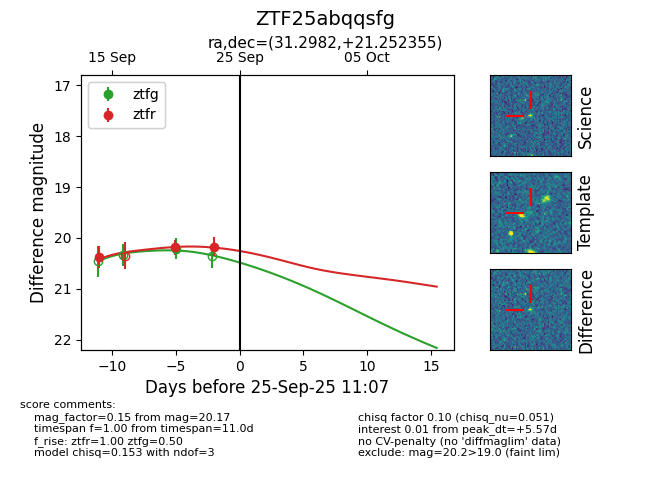
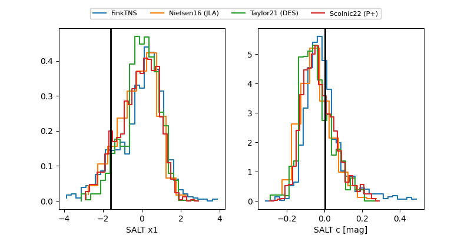

FINK: ZTF25abqqsfg
Lasair: ZTF25abqqsfg
ALeRCE: ZTF25abqqsfg
ZTF25abqqsfg (ztf,fink)
equatorial (ra, dec) = (31.2982,+21.25236)
galactic (l, b) = (145.0375,-38.43281)


last ztfg=20.21, ztfr=20.17
1 ztfg, 3 ztfr detections